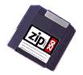

| Накопители, использующие эффект Бернулли, выпускаются фирмой Iomega. |
|
| Популярный тип привода, использующего эффект Бернулли, — накопитель Zip. Он подключается через параллельный порт или через SCSI-интерфейс. Скорость передачи данных — до 1,1 Мбайта/с. |
|
|  | Емкость 3,5" картиджа — 100 Мбайт. Скорость вращения диска — около 3000 об/мин. Время доступа — около 30 мс. |